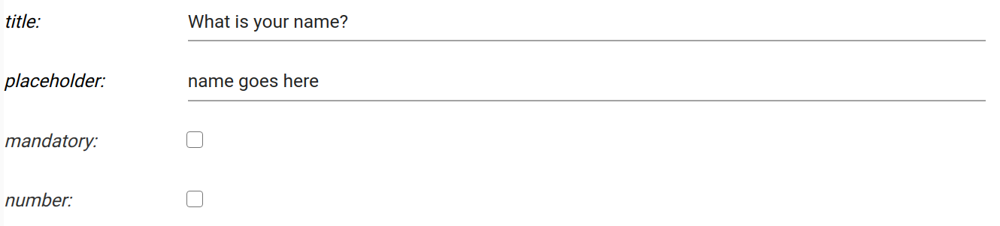
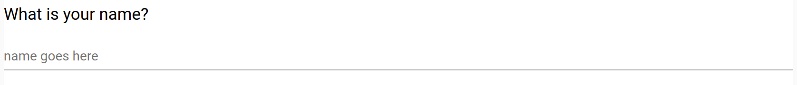
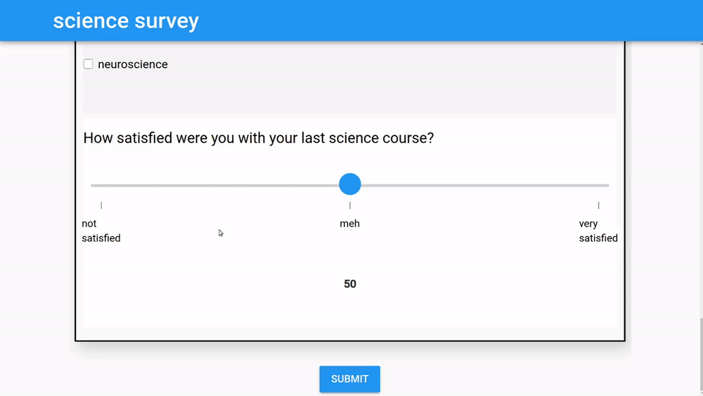

Survey Development¶
Survey dashboard¶
The survey dashboard allows you to edit, build, and configure settings for your surveys. Survey data and share links can also be accessed from the dashboard. Clicking "New survey" or the icon will take you to the survey designer (explained below) for a new or existing survey, respectively.
The survey dashboard

Survey designer¶
The survey designer is where most of the survey development takes place. It consists of the designer toolbar (click on the to toggle the side panel's visibility) and various other UI elements, including those that allow you to structure your survey and control how it behaves. To preview the survey as the end user would see it, click "Preview" at the top of the page (or access the share link from the dashboard).
The survey designer

Designer toolbar¶
The designer toolbar contains widgets (e.g., text_box, drop_down, sections, etc). Clicking on the widgets adds them to the page below the currently selected element. The icon will toggle the toolbar's visibility.
The designer toolbar

Widget settings¶
When a widget is added to the page during survey development, values need to be specified to control how the widget appears to the end user.
For example, the text_box widget requires the following information:
-
title. The label displayed on this widget. For example, "What is your name?"
-
placeholder. Text that prompts the user. For example, "Type your name here?"
-
mandatory flag. If checked, this field must be filled out by the user before the survey can be submitted
-
number. If checked, this field will be restricted to a number
The following example shows the designer representation of the text_box as well as what the end user sees.
Designer 
Survey 
All widgets have their own sets of options to be specified. Please click here to learn about the available widgets and how they are used.
Are widget settings represented as key/value pairs?
Yes! In fact, all survey settings are represented by an underlying and accessible JSON/Python dict where keys and values corresspond exactly to what is shown in the designer
Widget toolbar¶
Once a widget has been added to the page, the widget's toolbar can be used to move the widget up or down, delete the widget, and control the widget's visibility with branching.
The widget toolbar

Basic Widget controls¶
The sign can be used to delete the widget and the up/down arrows can be used to move the widget up or down.
Branching¶
The icon opens up the branching UI. Branching controls the visibility of the selected widgets (including sections) based on the values of other widgets. Multiple conditions can be combined together to make complex branching rules if needed. The below example shows a text_box widget's visibility being controlled by the value of a slider widget. In this case, whenever the slider goes below 40, the text_box is displayed. When branching exists on a widget, the icon on the widget's toolbar is highlighted.
Setting branching rules on a text_box

The text_box is revealed when the condition is met 